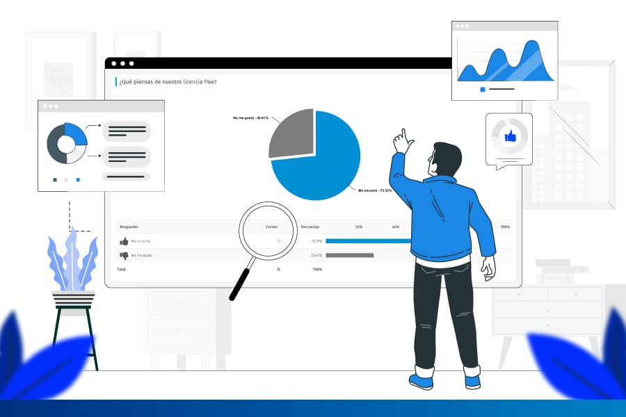
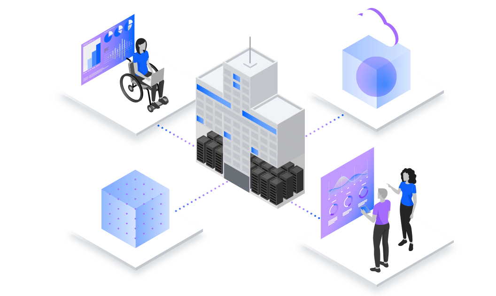

EcoMetric
Bienvenidos al paisaje donde la naturaleza y la sostenibilidad se entrelazan. En este espacio, nos dedicamos a explorar y promover la gestión ambiental, una práctica fundamental para preservar la belleza y la biodiversidad de nuestro entorno. Acompáñanos en este viaje hacia un futuro más verde y próspero.
Te invitamos a ser parte del cambio con Ecometric. Ya sea calculando tu huella de carbono, participando en proyectos de reforestación o apoyando iniciativas locales, cada acción cuenta en nuestra misión compartida de construir un futuro más sostenible y equitativo para todos.

Nuestros Servicios
Servicio de Análisis de Huella Ambiental
Realizamos un análisis exhaustivo de la huella ambiental de tu empresa para identificar oportunidades de mejora.
Plataforma de Monitoreo Ambiental
Ofrecemos una plataforma digital de monitoreo ambiental en tiempo real para ayudarte a comprender tu entorno.
Asesoría en Estrategias de Sostenibilidad
Brindamos consultoría especializada en estrategias de sostenibilidad para maximizar tu impacto positivo.
-

Evaluación de Impacto Ambiental:
evaluaciones de impacto ambiental (EIA) para proyectos y desarrollos en diversas industrias. Utilizando metodologías científicas y técnicas de vanguardia
-
Proporcionamos Recomendaciones:
Recomendaciones para mitigar y gestionar los impactos negativos.
-

Garantía de Cumplimiento:
Garantía de cumplimiento de las regulaciones ambientales vigentes y con la promoción del desarrollo sostenible en todas las etapas de los proyectos evaluados